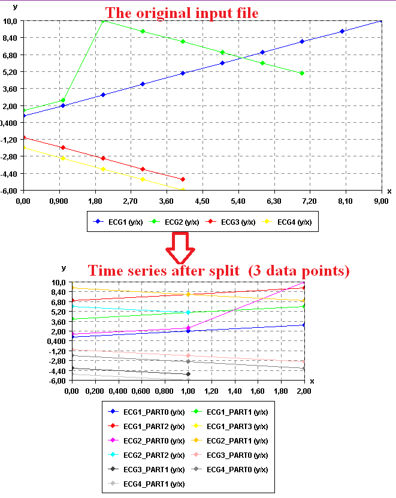

Split time series by length (SPMF documentation)
This example explains how to split a time series by length using the SPMF open-source data mining library.
How to run this example?
- If you are using the graphical interface, (1) choose the "Split_time_series_by_length" algorithm, (2) select the input file "contextSAX.txt", (3) set the separator to the comma ',' (4) set the size of segment to 3, and then (5) click "Run algorithm".
- If you want to execute this example from the command line,
then execute this command:
java -jar spmf.jar run Split_time_series_by_length contextSAX.txt output.txt 3 ,
in a folder containing spmf.jar and the example input file contextSAX.txt. - If you are using the source code version of SPMF, to run respectively this example, launch the file "MainTestSplitTimeSeriesByLength_FileToFile.java"in the package ca.pfv.SPMF.tests.
What is this algorithm?
This algorithm takes one or more time series as input. Then it split each time series into several time series. The criteria for spliting the time series is a maximum number of data points per time series (called the "segment size"). For example, if a time series contains 9 data points and the maximum number of data points is set to 3, the time series will be split into three time series of 3 data points each.
This simple algorithm is useful for spliting very long time series into several time series. For example, if one has a temperature reading time series for several years, it would be possible to split the time series by periods of 30 days.
What is the input of this algorithm?
The input is one or more time series. A time series is a sequence of floating-point decimal numbers (double values). A time-series can also have a name (a string).
Time series are used in many applications. An example of time series is the price of a stock on the stock market over time. Another example is a sequence of temperature readings collected using sensors.
For this example, consider the four following time series:
| Name | Data points |
| ECG1 | 1,2,3,4,5,6,7,8,9,10 |
| ECG2 | 1.5,2.5,10,9,8,7,6,5 |
| ECG3 | -1,-2,-3,-4,-5 |
| ECG4 | -2.0,-3.0,-4.0,-5.0,-6.0 |
This example time series database is provided in the file contextSAX.txt of the SPMF distribution.
In SPMF, to read a time-series file, it is necessary to indicate the "separator", which is the character used to separate data points in the input file. In this example, the "separator" is the comma ',' symbol.
To split the data, it is required to provide a maximum number of data points per time series (segment size) for spliting the time series. For example, if a time series contains 9 data points and the maximum number of data points is set to 3, the time series will be split into three time series of 3 data points each.
What is the output?
The output is the set of time series that has been obtained by splitting the time series taken as input.
For example, in the above example, if the number of segments (data points) is set to 3 data points, the result is:
| Name | Data points |
| ECG1_PART0 | 1.0,2.0,3.0 |
| ECG1_PART1 | 4.0,5.0,6.0 |
| ECG1_PART2 | 7.0,8.0,9.0 |
| ECG1_PART3 | 10.0 |
| ECG2_PART0 | 1.5,2.5,10.0 |
| ECG2_PART1 | 9.0,8.0,7.0 |
| ECG2_PART2 | 6.0,5.0 |
| ECG3_PART0 | -1.0,-2.0,-3.0 |
| ECG3_PART1 | -4.0,-5.0 |
| ECG4_PART0 | -2.0,-3.0,-4.0 |
| ECG4_PART1 | -5.0,-6.0 |
To see the result visually, it is possible to use the SPMF time series viewer, described in another example of this documentation. Here is the result:

Input file format
The input file format used by this algorithm is efined as follows. It is a text file. The text file contains one or more time series. Each time series is represented by two lines in the input file. The first line contains the string "@NAME=" followed by the name of the time series. The second line is a list of data points, where data points are floating-point decimal numbers separated by a separator character (here the ',' symbol).
For example, for the previous example, the input file is defined as follows:
@NAME=ECG1
1,2,3,4,5,6,7,8,9,10
@NAME=ECG2
1.5,2.5,10,9,8,7,6,5
@NAME=ECG3
-1,-2,-3,-4,-5
@NAME=ECG4
-2.0,-3.0,-4.0,-5.0,-6.0
Consider the first two lines. It indicates that the first time series name is "ECG1" and that it consits of the data points: 1, 2, 3, 4, 5, 6, 7, 8, 9, and 10. Then, three other time series are provided in the same file, which follows the same format.
Output file format
The output file format is the same as the input format.
@NAME=ECG1_PART0
1.0,2.0,3.0
@NAME=ECG1_PART1
4.0,5.0,6.0
@NAME=ECG1_PART2
7.0,8.0,9.0
@NAME=ECG1_PART3
10.0
@NAME=ECG2_PART0
1.5,2.5,10.0
@NAME=ECG2_PART1
9.0,8.0,7.0
@NAME=ECG2_PART2
6.0,5.0
@NAME=ECG3_PART0
-1.0,-2.0,-3.0
@NAME=ECG3_PART1
-4.0,-5.0
@NAME=ECG4_PART0
-2.0,-3.0,-4.0
@NAME=ECG4_PART1
-5.0,-6.0